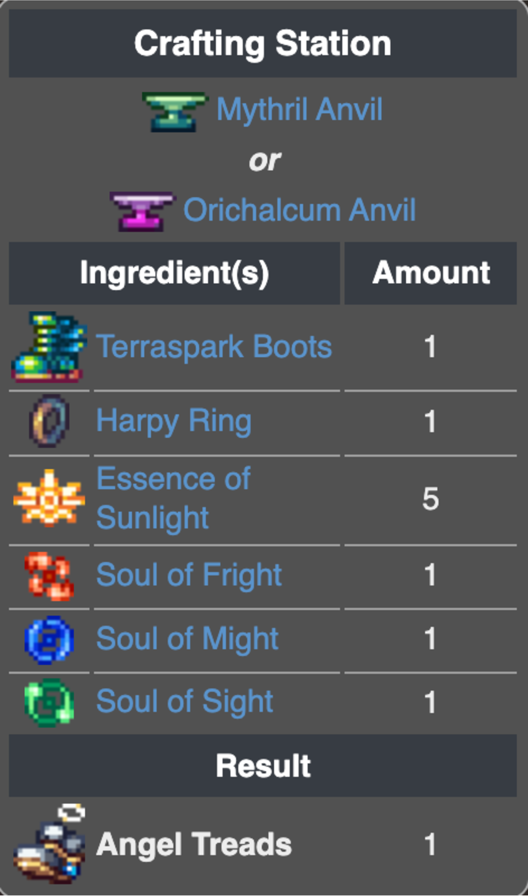
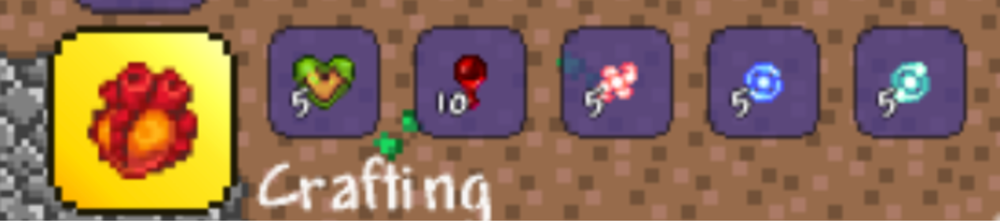
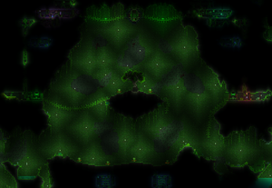
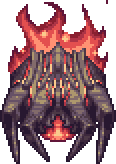
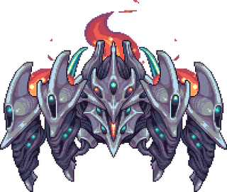
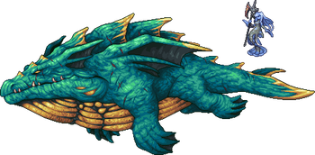
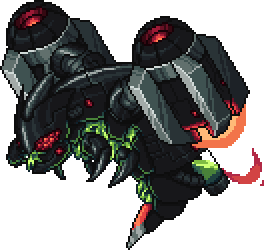
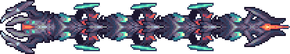

The Introduction
Pre-Hardmode
Hardmode
Post-Moonlord
About Me
HARDMODE
Hardmode. This is where things start to get spicy. Starting off, after recouperating from the absolute boat-load of messages you get after killing Wall of Flesh, you may notice that you only get Souls of Night from Altars, or that Cobalt and Palladium immediately both spawn upon entering hardmode. This is intentional, as Calamity reworks early hardmode progression to let the next tier of ore spawn after killing a Mechanical Boss. But let's ignore that for now. You may notice a yellow message saying "A star has fallen from the heavens!".  Congratulations! You've found the Astral Infection, a new biome generated by Calamity once Hardmode has been entered. You won't need it right now, but more often than not it'll be situated in your ice biome, which is a shame because your next boss is Cryogen, a boss fought... in the ice biome. Great. Farm up some Essence of Eleum from Hardmode Ice Biome enemies, and Souls of Light from Hallowed enemies. You can get Souls of Night by breaking hardmode Altars. For Cryogen, most of your Pre-Hardmode gear should suffice, however the fight may be tedious because Cryogen has such a large health pool, being a whopping 76,800 in Revengeance. Yeah. A lot. However, you do get an extra accessory slot from the Demon Heart,
Congratulations! You've found the Astral Infection, a new biome generated by Calamity once Hardmode has been entered. You won't need it right now, but more often than not it'll be situated in your ice biome, which is a shame because your next boss is Cryogen, a boss fought... in the ice biome. Great. Farm up some Essence of Eleum from Hardmode Ice Biome enemies, and Souls of Light from Hallowed enemies. You can get Souls of Night by breaking hardmode Altars. For Cryogen, most of your Pre-Hardmode gear should suffice, however the fight may be tedious because Cryogen has such a large health pool, being a whopping 76,800 in Revengeance. Yeah. A lot. However, you do get an extra accessory slot from the Demon Heart, a consumable dropped by the Wall of Flesh. To prepare for Cryogen, mine up some Palladium ore to get Palladium Armour, as it's set bonus can greatly increase your survivability in the fight. A good weapon for Cryogen is the Celestial Claymore, as during the later phases of Cryogen's fight, it starts to aggressively dash towards you, and since the stars spawned by the Celestial Claymore slowly drift towards you, it can result in this. Accessories include the Shield of Cthulhu, Bloody Worm Scarf and Bundle of Horseshoe Balloons. You can find anything else to fill in the gaps. After defeating Cryogen, Cryonic Ore starts to generate in the mines, however it cannot be mined until you have an Adamantite Pickaxe or better.
a consumable dropped by the Wall of Flesh. To prepare for Cryogen, mine up some Palladium ore to get Palladium Armour, as it's set bonus can greatly increase your survivability in the fight. A good weapon for Cryogen is the Celestial Claymore, as during the later phases of Cryogen's fight, it starts to aggressively dash towards you, and since the stars spawned by the Celestial Claymore slowly drift towards you, it can result in this. Accessories include the Shield of Cthulhu, Bloody Worm Scarf and Bundle of Horseshoe Balloons. You can find anything else to fill in the gaps. After defeating Cryogen, Cryonic Ore starts to generate in the mines, however it cannot be mined until you have an Adamantite Pickaxe or better.
Now time for the mechanical bosses. You should have a good pair of wings by now. The Soul of Cryogen works for all rounded bonuses, however the Fairy Wings work for survivability with its +60HP boost. From Cryogen you should've gotten the Avalanche, an amazing weapon for both Skeletron Prime and the Destroyer, however it lacks a bit for the Twins. That's why you have the Celestial Claymore. In fact, if you survive long enough, you can destroy the Destroyer in merely a few seconds. Ironic, I know. After beating one mechanical boss, Orichalcum and Mythril Ore start to generate. You can get any of the armour sets, but I recommend Mythril for it's all-rounded stat bonuses. Now, you can get the Grand Gelatin accessory by combining Vital Jelly from Green Jellyfish, Cleansing Jelly from Blue Jellyfish and Life Jelly from Pink Jellyfish with two Souls of Light and Night. The Grand Gelatin provides great healing buffs for survivability. Now you should be geared up enough for your next mechanical boss.
Depending on which mechanical boss you decide to defeat next decides if you have access to the Forbidden Oathblade or not. If you beat Skeletron Prime, congrats! You can upgrade your Bladecrest Oathsword to a Forbidden Oathblade. In my opinion, it's the worst of the three. Sorry. You can keep the same gear as last time, but mine up some Adamantite and Titanium Ore to get either Titanium or Adamantite Armour. Titanium for offensive capabilities, Adamantite for defense capabilities. The last mech boss should be easy if you're skilled enough. Congrats! Now this is where it starts to get fun.
After the mech bosses, you unlock LOTS of new upgrades. You could optionally go for the Aquatic Scourge at the Sulphurous Sea biome, however I don't think many of the items are particularly useful. You know what is useful? Angel Treads! The first Calamity boot accessory. The recipe for it is on the left. Next, a core part of Calamity.Permanent Health Upgrades. You can craft a Blood Orange which permanently increases your HP by 25. There are 4 such upgrades, and each one is unlocked in a different point of progression. Now for your gear. Mine some Chlorophyte Ore to get Chlorophyte Armour. The set bonus was slightly nerfed, where instead of dealing damage, it heals you. However, that doesn't mean you should skip it. It's still as essential as ever. Now, since you have a pickaxe above Adamantite/Titanium, you can mine Cryonic Ore, turn it into Cryonic Bars, and combine it with Crystal Shards to make your saving grace; the Ornate Shield. It is a ram dash accessory, however instead of bouncing off of the enemy, you ram directly through them, giving you invincibility frames as well as dealing damage. Absolutely life-changing. Next, you can make some upgrades to your weapons. Make the True Night's Edge, which I hope you know how to craft, but if you don't, Calamity actually tweaked it a little bit. You only need 3 Souls of Might, Fright and Sight dropped from the three mechanical bosses, and the Night's Edge. Another great sword primarily for its use of inflicting Ichor, a debuff that reduces defense, is the Catastrophe Claymore. You can craft it fresh out of mech bosses, requiring Hallowed Bars, Ichor or Cursed Flames depending on your world, and the three Souls I mentioned before. Now you should be geared to fight Plantera. One more thing, Plantera also has buffed HP in Calamity, having 126,000 HP. IN REVENGEANCE. Find a Plantera Bulb, or alternatively, Calamity generates a sub-biome called the Vernal Pass, with custom generated "super-bulbs" that still spwan Plantera. Just be careful when looping her, as there is a bridge near the top that you have to be wary of.
Congratulations! You beat Plantera... but you can't go to Golem just yet. The Brimstone Witch would like to fight. Just kidding, it's the Clone of Calamitas. The reason why she's called Calamitas Clone is a whole lore dump, so I won't bore you. All you need to know is that most of your Pre-Plantera gear suffices, although if you're desperate for upgrades you can craft the Terra Blade, the poster child of Terraria. It's recipe is something everyone knows- True Night's Edge, True Excalibur, Broken Hero's Sword from the Solar Eclipse event, and Calamity throws in Living Shards dropped by Plantera that create a whole plethora of Terra Blade ripoffs for other weapons. Calamitas Clone is more of a Retinazer clone, as both share the same AI. Oh, and, defeating her is necessary to face the Witch. She drops Ashes of Calamity, used for various upgrades as well as summoning the Witch. Despite her seeming easier than Plantera, she is the first major hurdle in terms of Calamity bosses, because after her fight... you are blessed with quite possibly my favourite Calamity OST of all time. And it's an interlude. It's just that good.
Next, you have branching paths, because all three of these bosses are at the same progression level. Your choices include Astrum Aureus, Anahita and the Leviathan, and Golem. Pick your poison. You don't have to follow the order, but let's go with a linear path and assume listed order. Astrum Aureus, the first of two Astral Infection bosses. He is absolutely infuriating without a ram dash, but good thing you got yourself an Ornate Shield. He doesn't drop much, although in Revengeance he does drop an upgrade for your Adrenaline bar. Once you defeat Astrum Aureus, most of the normal enemies that you see in the Astral Infection start to drop new items. But enough of the irrelevant things. Let's move to Anahita and the Leviathan.
Anahita and the Leviathan are technically two bosses, however you must defeat both of them in order to win the fight and get the drops, so we'll count them as one. They both have different movesets, so you must worry about both of them attacking you at once. You spawn the bossfight by going to the ocean which is not the Sulphurous Sea, and then finding the "???" enemy and kill it. Once you do, the fight will start. You first fight Anahita, and then she calls in the Leviathan once she reaches 40% HP. Most of your gear from Post-Plantera and CalClone should suffice, although you could use Entropy's Vigil dropped by Calamitas Clone for some extra damage. However, once you defeat them, you have a chance to get possibly one of the best accessories in the game. The Community. It actually scales in effectiveness based on how many bosses you have defeated, so the more bosses defeated, the better it is. If you've defeated exactly half of the bosses (21 Bosses), you would be blessed with +3% critical strike chance, +6.2% damage, +6% maximum HP, +2HP/s life regeneration, +3.12% damage reduction, +6 defense, +6.2% movement speed, and +12.5% flight time. This is viable even up to the endgame, so keep it for as long as you can. They also drop the Greentide, a decently powerful true melee sword that summons rows of teeth to damage your enemies. Other than that, we can finally move on to Golem.
Golem is a lot harder than he is in Terraria. You may actually need to move around and dodge his attacks, as he does a lot more damage and has a lot more HP, being 111,000 in Revengeance. Some improvements to your gear could be swapping Chlorophyte for Reaver Armour, crafted from Perennial Ore that can spawn in Dirt or Stone after Plantera. You may also improve your wings to Mothron Wings. And one more thing. Upgrade your Ornate Shield to the Asgard's Valor. To do this, you must combine it with the already hard to craft Ankh Shield and a Core of Calamity, created by combining 3 Cores of Sunlight, Eleum and Havoc. But other than that, it's about all you can do before Golem. Don't worry, after Golem, you unlock more things.
Congratulations! You've beaten Golem. Now, you may be wondering, "What's next?" Well, two new bosses before Moonlord have been added. However, before them, we must upgrade our armour. Hydrothermic Armour is the next set, crafted from Scoria mined in the Abyss. But wait, what even is the Abyss??? The Abyss is a sub-biome generated under the Sulphurous Sea divided into four layers. Better hope you have some diving gear, because breath loss in the Abyss will make it so that you won't survive even 3 seconds without being turned into a sad pile of mush. The Sulphuric Depths, the first layer. This layer is mostly safe, with your only worry being the sulphuric poisoning. The Murky Waters, the second layer. This layer contains powerful Pre-Hardmode gear, but it's basically useless to you. The Thermal Vents, the third layer of the abyss, and where we want to go for now. This layer contains extremely dangerous enemies, such as the Colossal Squid. Scoria Ore generates here, so that is what we are looking for. However, we still can go deeper. Layer four, the Void. The most dangerous enemies spawn here, and death will be guaranteed in a few seconds without diving gear. It's okay, we don't have to go there yet. Mine up some Scoria, turn it into Bars, and craft yourself a set of Hydrothermic Armour and a Hadal Mantle, a nice alternative to Mothron Wings. Now, you can make your second permanent health upgrade; the Miracle Fruit. The recipe is on the right. Another 25HP for you. Now, we can get back into the action. Your next boss should be the Plaguebringer Goliath. She can be summoned by using an Abombination, crafted from Plague Cell Canisters dropped by new enemies in the Jungle, as well as Obsidian and Iron Bars. All of your new and previous gear should suffice, as the Terra Blade should be your main weapon. Watch out for her angled dashes, it may catch you off guard. Dash directly at her to gain invincibility frames and survive.
Now, with Plaguebringer Goliath defeated, you can move to the Lunatic Cultist. Make one more weapon upgrade before you do fight him though, that being, possibly one of my favourite weapons, the Exalted Oathblade. Made from your previously mediocre Forbidden Oathblade and a Broken Hero's Sword,  Ashes of Calamity, and Infected Armor Plating dropped by the Plaguebringer Goliath. Absolutely one of the best Pre-Moonlord swords. You also get access to Virulence, a nice sword with a projectile that inflicts poison, useful for when you can't hit the enemy upfront. Lunatic Cultist is decently beefed up from the joke that he is in Terraria, so just be wary of that. Other than that, he shouldn't be a problem for you. Now, we return to the Astral Infection to finish up the last boss from that biome. Astrum Deus.
Ashes of Calamity, and Infected Armor Plating dropped by the Plaguebringer Goliath. Absolutely one of the best Pre-Moonlord swords. You also get access to Virulence, a nice sword with a projectile that inflicts poison, useful for when you can't hit the enemy upfront. Lunatic Cultist is decently beefed up from the joke that he is in Terraria, so just be wary of that. Other than that, he shouldn't be a problem for you. Now, we return to the Astral Infection to finish up the last boss from that biome. Astrum Deus.
Astrum Deus is summoned by using a Titan Heart for a one-time summon, or, after you beat it, you can craft the Starcore, allowing you to rebeat it as many times as you want. It is a worm boss, meaning you can prioritise things that pierce, such as the Solar Eruption and Virulence. They will fire barrages of lasers at you, so prioritise looping around the lasers to take minimal damage. Your accessories should be the same, however, assuming that you have defeated Ravager, a boss that changes drops once you beat a certain boss Post-Moonlord, you can use the insanely overpowered Blood Pact, which increases max HP by 25% and healing potion effectiveness by 25%. However, most players (including me), will often leave this boss until we have defeated said boss to get better rewards. So, assuming you haven't defeated him, we continue as per scheduled plan. Once Astrum Deus reaches half HP, it will then proceed to commit mitosis and split into two different worms. They each have their own health bar, but only one is required to be defeated to win the fight. It literally just means you have to fight two Astrum Deus' at once. I would highly recommend having the minimap open in the background, so you can see the location of both worms. After some trials, tribulations and most likely a few stupid deaths, you've finally reached the homestretch to the Calamity Original Content, aka Post Moonlord. Astrum Deus drops an insanely good accessory for Moonlord and even the Profaned Guardians. The Hide of Astrum Deus is mainly defensive with some offensive capabilities, being the flurry of stars that rain down upon you when you get hit or deal a true melee strike. Overall a good accessory. Defeating Astrum Deus also allows Astral Ore to be mined, which means you could make Astral Armor to trade defense for damage, although for melee users Hydrothermic is still better. Now, good luck. You have reached your next challenge.
The Moonlord is just like your vanilla Terraria fight, although you have the assistance of better weapons and armour to help you. For weapons, I'd recommend the Entropic Claymore, which launches homing projectiles so you don't have to aim while dodging for your life. The Exalted Oathblade, Solar Eruption and Daybreak all work fine, however the Entropic Claymore has homing so it's much more useful for players like me, who are lazy to aim. You can actually make The Absorber, an amazing accessory for soaking up healing buffs. Just get a Grand Gelatin, Baroclaw, Giant Tortoise Shell, Mollusk Shells, and Meld Constructs. Back on topic. Make sure to dodge Moonlord's death beam. Otherwise, you risk big damage. Other than that, keep swinging that Entropic Claymore, keep flying for your life, and make sure to always heal when you can.
Well, you made it. You beat the Moonlord. Get ready for a wilder ride, here in Post-Moonlord. This is where the real fun stuff begins.
Entering Post-Moonlord. Good Luck.